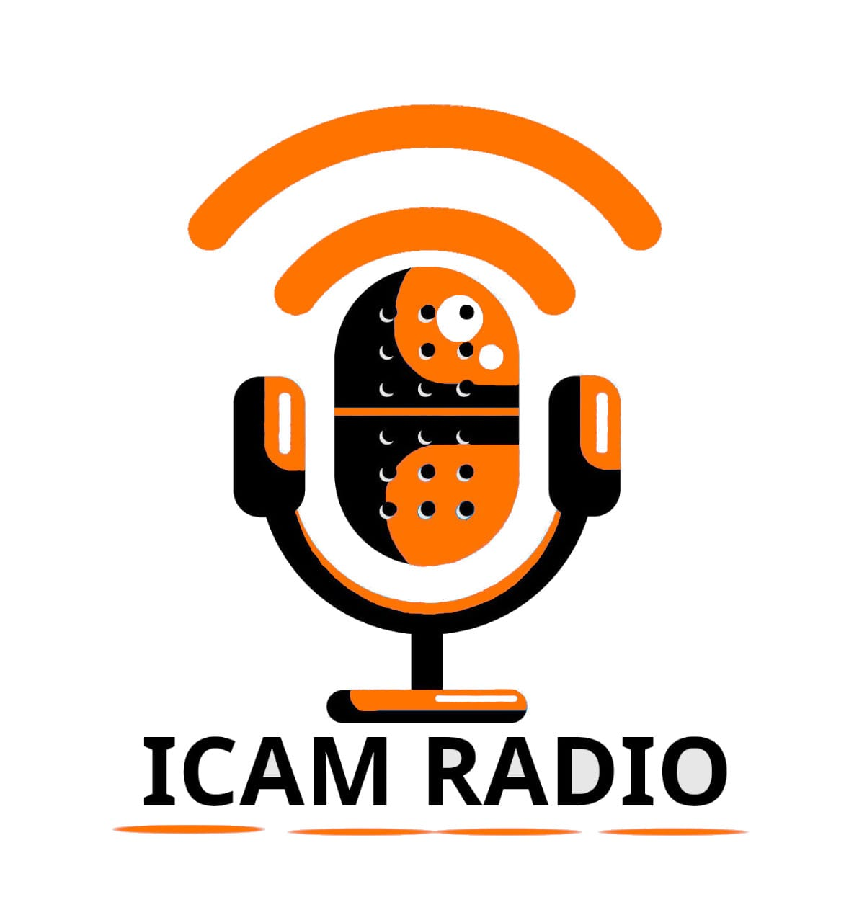

Icam radio est un projet de discussion, podcast disponible pour tous les Icamiens et Icamiennes, même pour les permanents et aussi pour tous ceux qui veuelent nous écouter.
Nous allons faire de la RADIO
Mais la radio c'est désué vous dites?
Pas la notre. Nous voyons cela comme une discussion entre potes. nous disons des conneries et sommes sérieux quand il le faut.
Alors venez nous écouter!
Pour plus d'information, allez à la page 2.